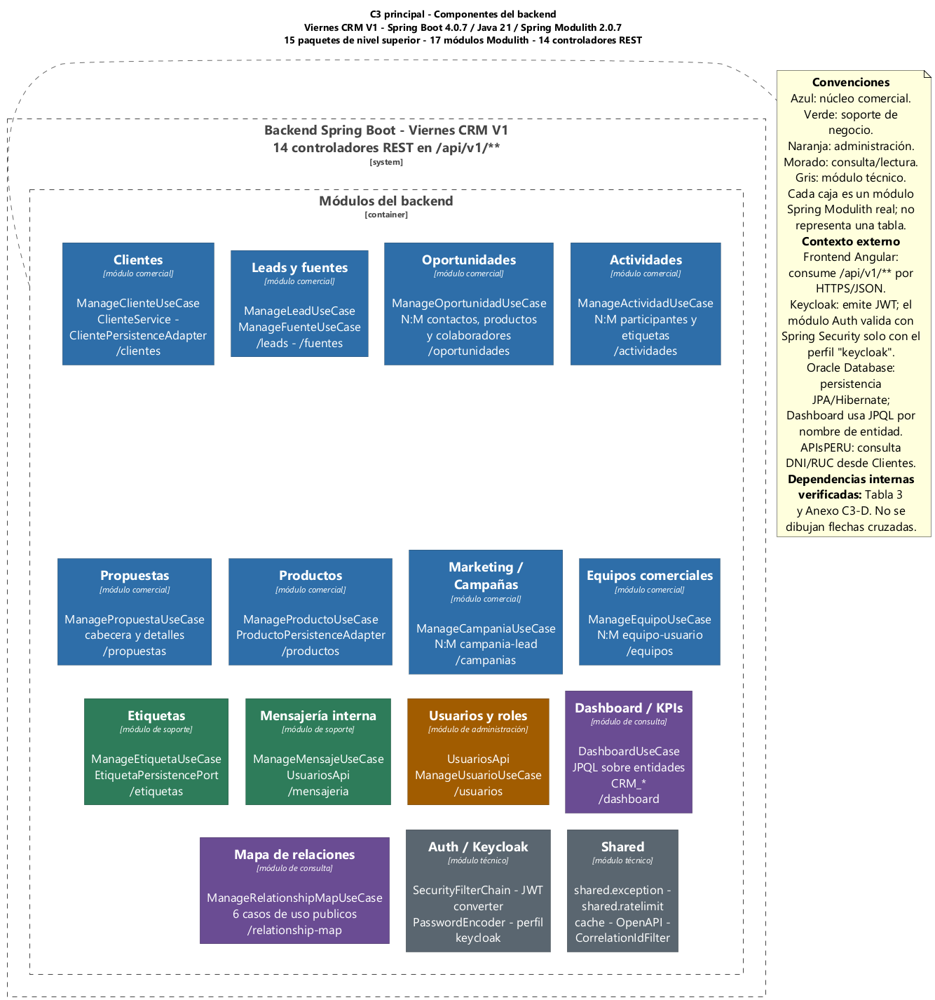
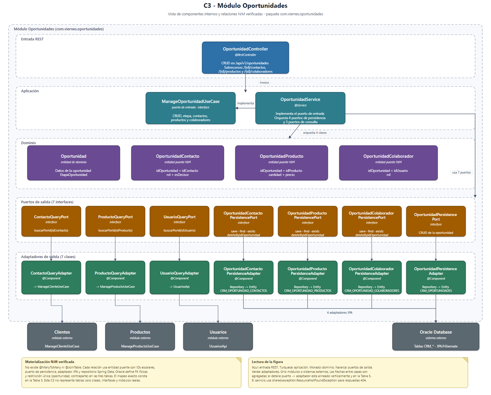
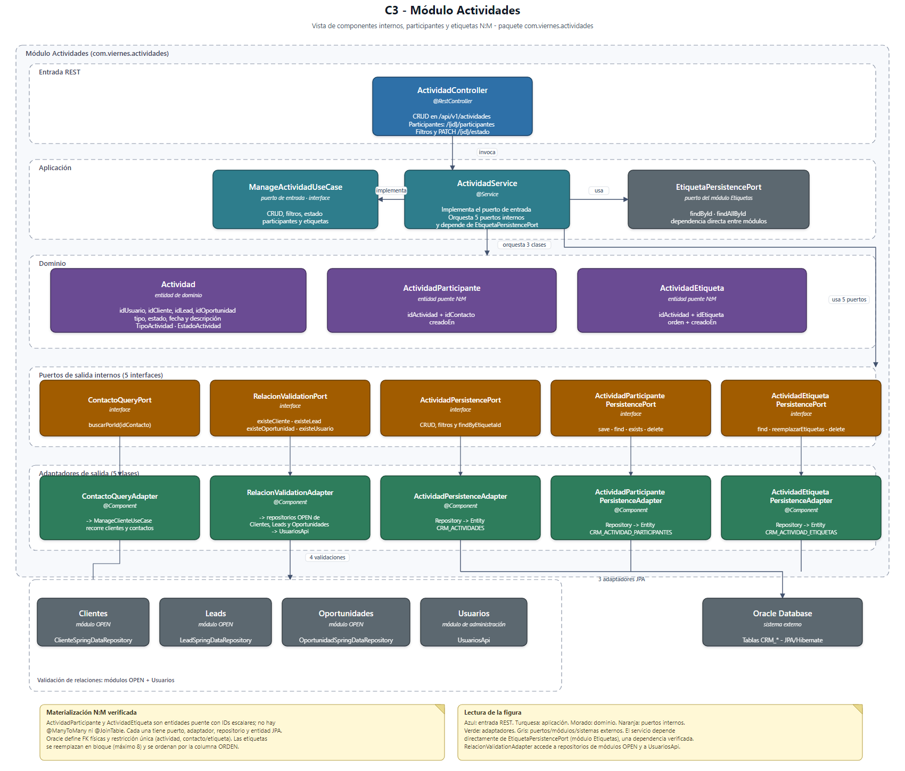

Proyecto: Viernes CRM V1 Backend: Spring Boot 4.0.7, Java 21, Spring Modulith 2.0.7 Fuente de verdad: árbol de trabajo E:\Viernes\Viernes\viernes-backend al 11/11/2026 Alcance: documentación estática de arquitectura; no se modificó código, esquema Oracle, configuración de Keycloak, dependencias ni migraciones.
Este documento reemplaza la vista incompleta de componentes usada en borradores anteriores. El C3 principal es un inventario de módulos; las dependencias internas verificadas se trasladaron al Anexo C3-D y las relaciones N:M a la Tabla 6. Con ello se evita convertir el C3 en un diagrama de tablas o en una maraña de flechas.
El backend de Viernes CRM V1 está organizado como un monolito modular con Spring Modulith y arquitectura hexagonal. El análisis del árbol de trabajo permitió identificar 15 paquetes de nivel superior, 17 módulos Modulith y 14 controladores REST. Los módulos se clasificaron en ocho comerciales, dos de soporte, tres de administración o consulta y dos técnicos.
| Categoría | Módulos | N.º |
|---|---|---|
| Comerciales | clientes, leads, oportunidades, actividades, propuestas, productos, marketing, equipos |
8 |
| Soporte de negocio | etiquetas, mensajeria |
2 |
| Administración y consulta | usuarios, dashboard, relationshipmap |
3 |
| Técnicos | auth, shared |
2 |
| Total de paquetes de nivel superior | 15 |
Tabla 1. Clasificación funcional de los módulos.
Los 17 módulos Modulith resultan de los 15 paquetes anteriores más los submódulos shared.exception y shared.ratelimit. La documentación generada por Spring Modulith (all-docs.adoc) lista esos 17 módulos; el grafo components.puml solo muestra 12 porque no todos los módulos participan en relaciones de módulo a módulo. Esta diferencia se explica en la sección 2.3.
La conclusión principal es que el diseño sigue una dirección razonable: los controladores dependen de puertos de entrada, los servicios implementan esos puertos y la persistencia se resuelve mediante puertos y adaptadores. Las excepciones más relevantes son el acceso directo a repositorios de módulos OPEN en algunos adaptadores de validación, la dependencia directa de Actividades hacia EtiquetaPersistencePort y el uso de JPQL por nombre de entidad en Dashboard. Estas excepciones están identificadas y no se ocultaron en el diagrama.
La verificación combinó código fuente y documentación generada:
package-info.java de cada módulo, para conocer tipo (OPEN o CLOSED) y dependencias declaradas.target/spring-modulith-docs/all-docs.adoc y module-*.adoc, para el inventario de módulos.target/spring-modulith-docs/components.puml, como grafo secundario de dependencias.11_Datos/oracle_constraints.csv, para las restricciones físicas de Oracle.09_Arquitectura_Software.md y la vista antigua de Leads en arquitectura_codigo.html.No se ejecutó la aplicación, no se levantó Oracle y no se hicieron pruebas de integración. El resultado es un análisis estático, reproducible y limitado a lo que el árbol de trabajo y las evidencias documentales permiten afirmar.
En C4, un diagrama C3 muestra los componentes dentro de un contenedor y sus interfaces. En este proyecto, cada módulo Spring Modulith se representa como una caja de componente y las interfaces públicas se indican en su interior. No se representan tablas dentro del C3: las tablas se usan solo como evidencia de persistencia en la Tabla 6.
El C3 principal no dibuja flechas internas. Esa decisión es deliberada: con 15 módulos y más de veinte relaciones, un grafo completo resultaría ilegible en Word. Las dependencias verificadas no se eliminaron; se trasladaron al Anexo C3-D, donde cada fila indica origen, destino, elemento usado, tipo de acceso y evidencia. Los C3 de Oportunidades y Actividades sí incluyen flechas porque su alcance es un solo módulo y permiten explicar el flujo hexagonal.
com.viernes.shared contiene los submódulos shared.exception y shared.ratelimit.components.puml, el grafo de dependencias generado. auth, dashboard y los componentes de shared no aparecen allí porque no aportan relaciones de módulo a módulo en ese grafo.Esta distinción evita un error frecuente: contar el número de cajas del grafo y concluir que faltan módulos. El inventario completo se toma de all-docs.adoc y del código, no solo de components.puml.

Figura 1. C3 principal. Cada caja es un módulo Spring Modulith real, no una tabla. Las dependencias internas están en el Anexo C3-D.
La figura agrupa los módulos por color:
Cada caja muestra la interfaz pública principal, el controlador o la ruta base, y una responsabilidad breve. El recuadro amarillo documenta el contexto externo y las convenciones. El frontend Angular consume /api/v1/**; Keycloak emite el JWT y el módulo auth lo valida con Spring Security cuando el perfil keycloak está activo; Oracle es la persistencia JPA/Hibernate; APIsPERU se consulta desde clientes para DNI/RUC.
El C3 principal no muestra flechas entre módulos. Las dependencias verificadas se encuentran en el Anexo C3-D y en la Tabla 7. Esta separación permite que la figura principal sea legible y que la tabla de dependencias sea auditable fila por fila.
| Módulo | Tipo Modulith | Responsabilidad e interfaz principal | Evidencia |
|---|---|---|---|
clientes |
Comercial, OPEN |
Clientes y contactos. ManageClienteUseCase; ClienteController en /api/v1/clientes. Consulta DNI/RUC mediante DocumentoLookupPort y APIsPERU. |
clientes/package-info.java, ClienteController, ClienteService, ApisPeruDocumentoAdapter |
leads |
Comercial, OPEN |
Leads y fuentes. ManageLeadUseCase y ManageFuenteUseCase; rutas /api/v1/leads y /api/v1/fuentes. |
LeadController, FuenteController, LeadService, FuenteService |
oportunidades |
Comercial, OPEN |
Pipeline comercial. ManageOportunidadUseCase; /api/v1/oportunidades. Contactos, productos y colaboradores N:M. |
OportunidadController, OportunidadService, puertos y adaptadores del módulo |
actividades |
Comercial, OPEN |
Agenda comercial. ManageActividadUseCase; /api/v1/actividades. Participantes y etiquetas N:M. |
ActividadController, ActividadService, RelacionValidationAdapter |
propuestas |
Comercial, OPEN |
Propuestas y detalles. ManagePropuestaUseCase; /api/v1/propuestas. Valida cliente, oportunidad y producto. |
PropuestaController, PropuestaService, PropuestaRelacionValidationAdapter |
productos |
Comercial, OPEN |
Catálogo de productos. ManageProductoUseCase; /api/v1/productos. |
ProductoController, ProductoService, ProductoPersistenceAdapter |
marketing |
Comercial, OPEN |
Campañas y asociación campaña-lead. ManageCampaniaUseCase; /api/v1/campanias. |
CampaniaController, CampaniaService, CampaniaLeadPersistenceAdapter |
equipos |
Comercial, CLOSED |
Equipos y miembros. ManageEquipoUseCase; /api/v1/equipos. Depende de UsuariosApi. |
EquipoController, EquipoService, UsuarioValidationAdapter |
etiquetas |
Soporte, OPEN |
Catálogo de etiquetas. ManageEtiquetaUseCase y EtiquetaPersistencePort; /api/v1/etiquetas. |
EtiquetaController, EtiquetaService, EtiquetaPersistencePort |
mensajeria |
Soporte, CLOSED |
Mensajería interna. ManageMensajeUseCase; /api/v1/mensajeria. Usa UsuariosApi. |
MensajeController, MensajeService |
usuarios |
Administración, CLOSED |
Usuarios y roles. UsuariosApi, ManageUsuarioUseCase y UsuarioConsultaPort; /api/v1/usuarios. |
UsuarioController, UsuarioService, UsuariosApi |
dashboard |
Consulta, OPEN |
KPIs y agregados. DashboardUseCase; /api/v1/dashboard. Usa JPQL por nombre de entidad. |
DashboardController, DashboardQueryRepository |
relationshipmap |
Consulta, OPEN |
Mapa de relaciones entre entidades. ManageRelationshipMapUseCase; /api/v1/relationship-map. Consume cinco casos de uso y UsuariosApi. |
RelationshipMapController, RelationshipMapService |
auth |
Técnico, CLOSED |
Seguridad OAuth2/OIDC. SecurityFilterChain, conversor JWT y PasswordEncoder; solo activo con perfil keycloak. |
KeycloakSecurityConfig, KeycloakJwtAuthenticationConverter, PasswordEncoderConfig |
shared |
Técnico, contenedor | Infraestructura transversal: OpenApiConfig, CorrelationIdFilter, CacheConfig, CacheRefreshJob. |
shared/ |
shared.exception |
Técnico, OPEN |
ResourceNotFoundException, RateLimitExceededException, GlobalExceptionHandler. |
shared/exception/ |
shared.ratelimit |
Técnico, OPEN |
ConsultaDocumentoRateLimiter, usado por clientes. |
shared/ratelimit/ |
Tabla 2. Inventario de módulos y submódulos. La columna de evidencia indica la clase o archivo principal; no sustituye la revisión del paquete completo.
| Módulo | Controlador | Ruta base | Observación |
|---|---|---|---|
actividades |
ActividadController |
/api/v1/actividades |
CRUD, filtros, estado, participantes |
clientes |
ClienteController |
/api/v1/clientes |
CRUD y consulta de documentos |
dashboard |
DashboardController |
/api/v1/dashboard |
KPIs de lectura |
equipos |
EquipoController |
/api/v1/equipos |
CRUD y miembros |
etiquetas |
EtiquetaController |
/api/v1/etiquetas |
CRUD de catálogo |
leads |
LeadController |
/api/v1/leads |
CRUD y filtros |
leads |
FuenteController |
/api/v1/fuentes |
Catálogo de fuentes |
marketing |
CampaniaController |
/api/v1/campanias |
CRUD y leads asociados |
mensajeria |
MensajeController |
/api/v1/mensajeria |
Bandeja interna |
oportunidades |
OportunidadController |
/api/v1/oportunidades |
CRUD y subrecursos N:M |
productos |
ProductoController |
/api/v1/productos |
CRUD de catálogo |
propuestas |
PropuestaController |
/api/v1/propuestas |
CRUD y transiciones |
relationshipmap |
RelationshipMapController |
/api/v1/relationship-map |
Consulta agregada |
usuarios |
UsuarioController |
/api/v1/usuarios |
Usuarios y roles |
Tabla 3. Catorce controladores REST identificados. auth no expone controlador; su función es configurar seguridad.
El frontend Angular consume la API por HTTPS/JSON. Keycloak emite el token JWT y KeycloakSecurityConfig configura un SecurityFilterChain sin estado, con @Profile("keycloak"). Las reglas principales son:
ADMIN.ADMIN y JEFE.ADMIN.productos, campanias, fuentes, equipos, etiquetas): ADMIN y JEFE.El módulo auth declara allowedDependencies = {"usuarios"}, pero no importa clases de usuarios en el código actual. Es una dependencia declarada y no usada; se mantiene como permiso de módulo, no como relación efectiva.

Figura 2. C3 del módulo Oportunidades. Las flechas entre capas son agregadas; el mapeo exacto puerto-adaptador está alineado y se detalla en la Tabla 6.
El controlador OportunidadController depende únicamente de ManageOportunidadUseCase. OportunidadService implementa ese puerto de entrada y orquesta cuatro puertos de persistencia y tres puertos de consulta:
OportunidadPersistencePort: CRUD, filtros, pipeline y búsqueda.OportunidadContactoPersistencePort, OportunidadProductoPersistencePort y OportunidadColaboradorPersistencePort: asociaciones N:M.ContactoQueryPort, ProductoQueryPort y UsuarioQueryPort: validación de la contraparte externa.Los adaptadores de persistencia usan repositorios Spring Data y entidades JPA con IDs escalares. Los adaptadores de consulta delegan en ManageClienteUseCase, ManageProductoUseCase y UsuariosApi, respectivamente. El servicio lanza ResourceNotFoundException cuando la oportunidad o la contraparte no existe, y IllegalArgumentException cuando la asociación ya existe.
| Recurso | Métodos | Ruta | Observación |
|---|---|---|---|
| Oportunidades | GET, POST, PUT, PATCH, DELETE | /api/v1/oportunidades, /{id}, /{id}/etapa |
PATCH de etapa con ?etapa=... |
| Contactos | GET, POST, PUT, DELETE | /{id}/contactos, /{id}/contactos/{contactoId} |
PUT actualiza rol y esDecisor |
| Productos | GET, POST, DELETE | /{id}/productos, /{id}/productos/{productoId} |
cantidad es el único dato propio de la asociación |
| Colaboradores | GET, POST, DELETE | /{id}/colaboradores, /{id}/colaboradores/{usuarioId} |
Valida usuario con UsuariosApi |
Tabla 4. Endpoints del módulo Oportunidades. La ruta base es /api/v1/oportunidades.
Las tres asociaciones se modelan con entidades puente explícitas:
OportunidadContacto: idOportunidad, idContacto, rol, esDecisor, creadoEn.OportunidadProducto: idOportunidad, idProducto, cantidad, creadoEn. El precio no se persiste en la asociación: se obtiene de ProductoResponse al construir la respuesta.OportunidadColaborador: idOportunidad, idUsuario, creadoEn.No hay @ManyToMany ni @JoinTable. Cada entidad tiene su repositorio, puerto y adaptador. La Tabla 6 consolida las restricciones Oracle y los endpoints.

Figura 3. C3 del módulo Actividades. El puerto EtiquetaPersistencePort pertenece al módulo Etiquetas y se muestra como dependencia externa.
ActividadController depende de ManageActividadUseCase; ActividadService implementa el puerto y orquesta cinco puertos internos:
ActividadPersistencePort: CRUD, filtros por estado, cliente, lead, oportunidad, etiqueta, usuario, tipo y vencidas.ActividadParticipantePersistencePort: asociación actividad-contacto.ActividadEtiquetaPersistencePort: asociación actividad-etiqueta, con reemplazo en bloque y orden.ContactoQueryPort: consulta de contactos para participantes.RelacionValidationPort: validación de cliente, lead, oportunidad y usuario.Además, ActividadService depende directamente de EtiquetaPersistencePort, un puerto de salida del módulo etiquetas. Esta es una dependencia entre módulos verificada y se representa como caja externa en la Figura 3.
| Recurso | Métodos | Ruta | Observación |
|---|---|---|---|
| Actividades | GET, POST, PUT, PATCH, DELETE | /api/v1/actividades, /{id}, /{id}/estado |
listar acepta filtros por estado, cliente, lead, oportunidad, etiqueta, usuario y vencidas |
| Participantes | GET, POST, DELETE | /{id}/participantes, /{id}/participantes/{contactoId} |
Asociación actividad-contacto |
| Etiquetas | No hay subrecurso | etiquetaIds en ActividadRequest |
Máximo 8; se reemplazan en bloque; no existe /etiquetas como subrecurso |
Tabla 5. Endpoints del módulo Actividades. La ruta base es /api/v1/actividades.
Participantes. ActividadParticipante guarda idActividad, idContacto y creadoEn. Al agregar un participante, el servicio verifica que la actividad exista, busca el contacto con ContactoQueryPort y rechaza duplicados con existsByIdActividadAndIdContacto. El adaptador ContactoQueryAdapter usa ManageClienteUseCase; como ese caso de uso no expone una búsqueda directa por ID de contacto, recorre clientes y contactos. Es una decisión de implementación verificada, no una relación conceptual.
Etiquetas. ActividadEtiqueta guarda idActividad, idEtiqueta, orden y creadoEn. El servicio recibe etiquetaIds en ActividadRequest, elimina duplicados, valida que existan con EtiquetaPersistencePort y limita el total a ocho. ActividadEtiquetaPersistenceAdapter.reemplazarEtiquetas borra las filas anteriores, hace flush y vuelve a insertar con orden 0..n-1. No hay endpoint de etiquetas por actividad; el reemplazo ocurre al crear o actualizar la actividad.
Validación externa. RelacionValidationAdapter implementa RelacionValidationPort y accede directamente a ClienteSpringDataRepository, LeadSpringDataRepository, OportunidadSpringDataRepository y UsuariosApi. Es una dependencia a infraestructura de módulos OPEN, permitida por la declaración de módulo, pero más acoplada que el uso de un caso de uso o de una API nombrada.
ActividadService.eliminar borra primero las etiquetas, luego los participantes y finalmente la actividad. Oracle también define ON DELETE CASCADE en las tablas puente según oracle_constraints.csv. La aplicación y la base de datos protegen la integridad por dos vías; no se ejecutó una prueba transaccional para verificar el orden efectivo de ambas.
Las siete relaciones N:M del sistema se materializan con entidades puente explícitas. A nivel JPA no se declara @ManyToMany; las entidades usan IDs escalares y repositorios propios. A nivel Oracle, la metadata muestra claves foráneas y restricciones únicas. Esta separación permite atributos propios en la relación, como rol, esDecisor, cantidad u orden.
| Relación | Entidad puente, puerto y adaptador | Tabla Oracle y restricción única | Endpoints o uso | Evidencia |
|---|---|---|---|---|
| Oportunidad-Contacto | OportunidadContacto; OportunidadContactoPersistencePort; OportunidadContactoPersistenceAdapter |
CRM_OPORTUNIDAD_CONTACTOS; UK_OPORTUNIDAD_CONTACTO (ID_OPORTUNIDAD, ID_CONTACTO) |
GET/POST /{id}/contactos; PUT/DELETE /{id}/contactos/{contactoId} |
Entidad, puerto, adaptador y oracle_constraints.csv |
| Oportunidad-Producto | OportunidadProducto; OportunidadProductoPersistencePort; OportunidadProductoPersistenceAdapter |
CRM_OPORTUNIDAD_PRODUCTOS; UK_OPORTUNIDAD_PRODUCTO (ID_OPORTUNIDAD, ID_PRODUCTO) |
GET/POST /{id}/productos; DELETE /{id}/productos/{productoId} |
Entidad, puerto, adaptador y oracle_constraints.csv |
| Oportunidad-Colaborador | OportunidadColaborador; OportunidadColaboradorPersistencePort; OportunidadColaboradorPersistenceAdapter |
CRM_OPORTUNIDAD_COLABORADORES; UK_OPORTUNIDAD_COLABORADOR (ID_OPORTUNIDAD, ID_USUARIO) |
GET/POST /{id}/colaboradores; DELETE /{id}/colaboradores/{usuarioId} |
Entidad, puerto, adaptador y oracle_constraints.csv |
| Actividad-Participante | ActividadParticipante; ActividadParticipantePersistencePort; ActividadParticipantePersistenceAdapter |
CRM_ACTIVIDAD_PARTICIPANTES; UK_ACTIVIDAD_CONTACTO (ID_ACTIVIDAD, ID_CONTACTO) |
GET/POST /{id}/participantes; DELETE /{id}/participantes/{contactoId} |
Entidad, puerto, adaptador y oracle_constraints.csv |
| Actividad-Etiqueta | ActividadEtiqueta; ActividadEtiquetaPersistencePort; ActividadEtiquetaPersistenceAdapter |
CRM_ACTIVIDAD_ETIQUETAS; UK_ACTIVIDAD_ETIQUETA (ID_ACTIVIDAD, ID_ETIQUETA); columna ORDEN |
etiquetaIds en ActividadRequest, máximo 8; reemplazo en bloque; filtro ?etiquetaId= |
Entidad, adaptador, DTO y oracle_constraints.csv |
| Equipo-Usuario | EquipoMiembro; EquipoMiembroPersistencePort; EquipoMiembroPersistenceAdapter |
CRM_EQUIPO_MIEMBROS; UK_EQUIPO_MIEMBRO (EQUIPO_ID, USUARIO_ID) |
GET/POST /{id}/miembros; DELETE /{id}/miembros/{usuarioId} |
Entidad, puerto, adaptador y oracle_constraints.csv |
| Campaña-Lead | CampaniaLead; CampaniaLeadPersistencePort; CampaniaLeadPersistenceAdapter |
CRM_CAMPANIA_LEADS; UK_CAMPANIA_LEAD (CAMPANIA_ID, LEAD_ID) |
GET/POST /{id}/leads; DELETE /{id}/leads/{leadId} |
Entidad, puerto, adaptador y oracle_constraints.csv |
Tabla 6. Las siete relaciones N:M verificadas. La columna de endpoints usa la ruta base del módulo correspondiente.
Observación importante. Varios comentarios de entidades JPA de Oportunidades dicen “sin foreign key física”. Sin embargo, oracle_constraints.csv muestra claves foráneas como FK_OPP_CONTACTO_OPP, FK_OPP_PRODUCTO_PRODUCTO y FK_OPP_COLAB_USUARIO. La lectura correcta es: JPA no declara la relación ni una FK a nivel de mapeo, pero Oracle sí tiene FK físicas en la metadata consultada. La contradicción se registra en la Tabla 9.
El Anexo C3-D sustituye las flechas cruzadas del C3 principal. Cada fila es una dependencia observada en imports, constructores o llamadas del código actual. La columna “Tipo” distingue el acceso a una API nombrada, a un caso de uso, a un repositorio de un módulo OPEN, a un puerto de salida o a una consulta JPQL.
| Origen | Destino | Elemento usado | Tipo | Evidencia y observación |
|---|---|---|---|---|
equipos |
usuarios |
UsuariosApi |
API nombrada | UsuarioValidationAdapter; dependencia correcta y declarada |
mensajeria |
usuarios |
UsuariosApi |
API nombrada | MensajeService inyecta UsuariosApi |
marketing |
leads |
ManageLeadUseCase |
Caso de uso | CampaniaService; también usa EstadoLead en DTO de respuesta |
propuestas |
clientes |
ClienteSpringDataRepository |
Repositorio de módulo OPEN |
PropuestaRelacionValidationAdapter; acoplamiento a persistencia |
propuestas |
oportunidades |
OportunidadSpringDataRepository |
Repositorio de módulo OPEN |
PropuestaRelacionValidationAdapter; acoplamiento a persistencia |
propuestas |
productos |
ManageProductoUseCase |
Caso de uso | PropuestaService; dependencia correcta |
actividades |
clientes |
ManageClienteUseCase |
Caso de uso | ContactoQueryAdapter; recorre clientes y contactos |
actividades |
clientes |
ClienteSpringDataRepository |
Repositorio de módulo OPEN |
RelacionValidationAdapter; validación de existencia |
actividades |
leads |
LeadSpringDataRepository |
Repositorio de módulo OPEN |
RelacionValidationAdapter |
actividades |
oportunidades |
OportunidadSpringDataRepository |
Repositorio de módulo OPEN |
RelacionValidationAdapter |
actividades |
etiquetas |
EtiquetaPersistencePort |
Puerto de salida de otro módulo | ActividadService; dependencia directa entre módulos |
actividades |
usuarios |
UsuariosApi |
API nombrada | RelacionValidationAdapter; valida idUsuario |
oportunidades |
clientes |
ManageClienteUseCase |
Caso de uso | ContactoQueryAdapter |
oportunidades |
productos |
ManageProductoUseCase |
Caso de uso | ProductoQueryAdapter |
oportunidades |
usuarios |
UsuariosApi |
API nombrada | UsuarioQueryAdapter |
relationshipmap |
clientes, oportunidades, actividades, propuestas, productos |
Casos de uso respectivos | Casos de uso | RelationshipMapService; lectura agregada |
relationshipmap |
usuarios |
UsuariosApi |
API nombrada | RelationshipMapService |
dashboard |
Entidades de otros módulos | ClienteEntity, LeadEntity, OportunidadEntity, ActividadEntity, PropuestaEntity |
JPQL por nombre de entidad | DashboardQueryRepository; no hay import de clases de otros módulos |
auth |
usuarios |
Ninguno | Dependencia declarada no usada | auth/package-info.java declara usuarios; no se encontraron imports |
| Todos los módulos de negocio | shared.exception |
ResourceNotFoundException, GlobalExceptionHandler |
Submódulo OPEN |
Uso generalizado de ResourceNotFoundException; el handler es infraestructura |
clientes |
shared.ratelimit |
ConsultaDocumentoRateLimiter |
Submódulo OPEN |
ClienteController |
clientes |
shared.cache |
CacheConfig, @Cacheable |
Configuración transversal | ApisPeruDocumentoAdapter |
Tabla 7. Anexo C3-D. Dependencias internas verificadas y su evidencia.
La mayoría de las relaciones sigue el patrón deseado: un módulo consume una API nombrada o un caso de uso de otro. Los casos de equipos, mensajeria, marketing, oportunidades, relationshipmap y la validación de productos en propuestas son ejemplos de dependencia por contrato.
Hay tres acoplamientos que merecen seguimiento:
1. Repositorios de módulos OPEN. propuestas y actividades validan existencia con repositorios Spring Data de clientes, oportunidades y leads. Es legal porque esos módulos son OPEN, pero acopla el adaptador de un módulo a la infraestructura de otro. Una alternativa sería exponer un puerto de consulta estable. 2. EtiquetaPersistencePort en Actividades. El servicio de aplicación depende de un puerto de salida de otro módulo, no de un caso de uso. La dependencia es explícita y verificada, pero cruza la frontera de aplicación. 3. Dashboard por JPQL. No hay import de clases de otros módulos, pero las consultas usan nombres de entidad (ClienteEntity, LeadEntity, etc.). Es un acoplamiento lógico por nombre: si se renombra una entidad, la consulta puede fallar en tiempo de ejecución. No se ejecutó la aplicación para probarlo.
La comparación es documental y de código. No se localizó el archivo original del C3 de Lucidchart/Miro en el workspace; solo existen referencias en 09_Arquitectura_Software.md y una vista antigua de Leads en arquitectura_codigo.html. Por eso no se afirma que el C3 anterior tuviera o no una relación concreta: se contrastan las referencias disponibles.
| Aspecto | Referencia anterior | C3 actualizado | Evidencia |
|---|---|---|---|
| Cobertura de módulos | El informe anterior listaba 16 módulos y advertía que el C3 requería agregar relationshipmap, propuestas, equipos y marketing. |
Se documentan 15 paquetes de nivel superior y 17 módulos Modulith, con los cuatro módulos incorporados. | all-docs.adoc, package-info.java, código |
| Clasificación | No había una separación explícita entre comerciales, soporte, administración y técnicos. | Ocho comerciales, dos de soporte, tres de administración/consulta y dos técnicos. | Tabla 1 |
| Relaciones N:M | La documentación anterior advertía que los diagramas antiguos podían mostrar @ManyToMany. |
Se representan siete entidades puente con puerto, adaptador, repositorio y tabla propia; no se usa @ManyToMany. |
Entidades, puertos, adaptadores y Tabla 6 |
| Oportunidades | El C3 anterior no detallaba contactos, productos y colaboradores como asociaciones explícitas. | Se documentan tres asociaciones, sus endpoints y sus validaciones. | OportunidadService, controlador y Tabla 6 |
| Actividades | No se detallaban participantes ni etiquetas. | Se documentan participantes y etiquetas, máximo ocho, orden y reemplazo en bloque. | ActividadService, DTO, adaptador y Tabla 6 |
| Equipos y campañas | Eran módulos fáciles de omitir en una vista parcial. | Se incorporan equipos y marketing, con sus N:M equipo-usuario y campaña-lead. |
Controladores, servicios y Tabla 6 |
| Dependencias | El C3 anterior podía mezclar relaciones conceptuales y de código. | El C3 principal no dibuja flechas; el Anexo C3-D contiene solo dependencias verificadas. | Tabla 7 |
| Seguridad | No siempre se aclaraba el alcance de Keycloak. | Se documenta que KeycloakSecurityConfig solo se activa con el perfil keycloak y se listan las reglas de rol. |
KeycloakSecurityConfig |
| Dashboard | Podía interpretarse como dependencia directa entre módulos. | Se documenta como JPQL por nombre de entidad, sin import de clases de otros módulos. | DashboardQueryRepository |
| Shared | El conteo anterior no incluía el paquete shared de nivel superior. |
Se separan shared, shared.exception y shared.ratelimit, y se explica su uso. |
shared/, package-info.java |
| Documentación generada | all-docs.adoc omite controladores y servicios de equipos y mensajeria. |
Se verificaron directamente el código y los controladores de esos módulos. | EquipoController, MensajeController, servicios |
| C3 original | No está el archivo Lucidchart/Miro; solo la vista antigua de Leads. | Se entrega un C3 nuevo y se declara la limitación de comparación visual. | arquitectura_codigo.html, informe anterior |
Tabla 8. Cambios y correcciones respecto de las referencias anteriores.
| Elemento | Motivo y efecto | Tratamiento en este documento |
|---|---|---|
| Archivo original del C3 de Lucidchart/Miro | No está en el workspace; no se puede comparar visualmente ni recuperar el inventario exacto anterior. | Se declara la limitación y se compara solo con referencias documentales. |
| Ejecución de la aplicación | No se inició el backend; no se probaron endpoints, transacciones ni tiempos de respuesta. | El análisis es estático. |
Pruebas de integración y ModularityTests |
No se ejecutó Maven ni la suite de pruebas. | Se revisaron package-info.java, imports y código. |
| Oracle en vivo | No se consultó la base; se usó oracle_constraints.csv. |
Las FK/UK se citan como metadata, no como verificación en vivo. |
| Keycloak | No se validaron realm, claims, roles ni el flujo OIDC real. | Se describe la configuración estática y el perfil keycloak. |
| APIsPERU | No se probó la disponibilidad ni el contrato externo de DNI/RUC. | Se documenta el adaptador ApisPeruDocumentoAdapter y el puerto. |
Documentación generada en target |
Puede ser anterior al último cambio del árbol de trabajo. | Se usó como evidencia secundaria; la fuente primaria fue el código actual. |
components.puml |
Muestra 12 módulos, no 17; no incluye auth, dashboard ni los componentes de shared. |
Se explicó la diferencia y se usó all-docs.adoc como inventario. |
| Frontend Angular | No se revisaron rutas, guards ni consumo real de la API. | Se documenta /api/v1/** a partir de los controladores. |
| JPQL de Dashboard | No se ejecutaron las consultas; un cambio de nombre de entidad podría romperlas. | Se marca como acoplamiento lógico por nombre. |
| Cobertura completa de endpoints | Solo se tabularon los endpoints principales de Oportunidades y Actividades; no se hizo un diff completo contra OpenAPI. | Las tablas 4 y 5 son representativas, no un contrato exhaustivo. |
| Comentarios “sin foreign key física” | Contradicen la metadata Oracle, que sí muestra FK. | Se advierte la contradicción y se prioriza oracle_constraints.csv para la base de datos. |
auth y usuarios |
allowedDependencies declara usuarios, pero no hay imports. |
Se registra como dependencia declarada no usada. |
shared como módulo |
El paquete shared no tiene package-info.java de módulo; sus submódulos sí. |
Se representa como contenedor técnico y se separan sus submódulos. |
| Orden de borrado y cascada | La aplicación borra hijos y Oracle define ON DELETE CASCADE; no se probó el orden transaccional. |
Se documenta el doble mecanismo y se marca como no ejecutado. |
Tabla 9. Elementos no verificados, contradicciones y limitaciones.
El C3 actualizado permite sostener tres conclusiones académicas:
1. La arquitectura es modular y hexagonal en la mayoría de los flujos. Los controladores dependen de puertos de entrada; los servicios implementan esos puertos; la persistencia y las consultas externas se resuelven con puertos y adaptadores. Oportunidades y Actividades son los casos mejor documentados porque concentran las relaciones N:M y las validaciones externas.
2. Las relaciones N:M no son tablas ocultas dentro del C3. Son entidades puente explícitas, con atributos propios, puerto, adaptador, repositorio y restricción única. Esto mejora la expresividad del modelo y permite cumplir reglas como “máximo ocho etiquetas” u “orden de etiquetas” sin depender de una tabla intermedia generada automáticamente.
3. La deuda arquitectónica principal está en los bordes. El acceso directo a repositorios de módulos OPEN, la dependencia de Actividades a EtiquetaPersistencePort y el JPQL de Dashboard son verificables y acotados, pero muestran que la modularidad todavía depende de disciplina y de la declaración de módulos. El Anexo C3-D deja esa deuda a la vista, en lugar de esconderla en un diagrama.
El resultado es adecuado para un informe universitario: las figuras son legibles, las tablas separan inventario, endpoints, N:M y dependencias, y las limitaciones están declaradas. La comparación visual con el C3 anterior queda pendiente porque el archivo original no está en el workspace.
| Archivo | Uso |
|---|---|
C3_principal.puml |
Fuente editable PlantUML del C3 principal |
C3_principal.svg |
Versión vectorial del C3 principal |
C3_principal.png |
Versión PNG para insertar en Word |
generar_c3_detalle.py |
Fuente editable de los C3 de Oportunidades y Actividades; genera SVG y HTML de render |
C3_oportunidades.svg |
C3 vectorial de Oportunidades |
C3_oportunidades.png |
PNG del C3 de Oportunidades |
C3_actividades.svg |
C3 vectorial de Actividades |
C3_actividades.png |
PNG del C3 de Actividades |
09_Componentes_C3.md |
Fuente de este documento |
09_Componentes_C3.html |
Versión HTML con las figuras y tablas, apta para copiar a Word |
Texto_para_Word_C3.txt |
Versión de texto con tablas separadas por tabulaciones |
C3_relaciones_NM.csv |
Tabla 6 exportada para revisión |
C3_dependencias.csv |
Anexo C3-D exportado para revisión |
Tabla 10. Archivos entregables. Los HTML C3_oportunidades.html y C3_actividades.html son auxiliares de rasterizado y no sustituyen a los SVG.
El C3 principal se renderiza con PlantUML y C4-PlantUML:
java -jar plantuml.jar -tpng -charset UTF-8 C3_principal.puml
java -jar plantuml.jar -tsvg -charset UTF-8 C3_principal.pumlLos C3 de Oportunidades y Actividades se generan con el script y se rasterizan con Chrome headless:
python generar_c3_detalle.py
chrome --headless --disable-gpu --no-sandbox --hide-scrollbars \
--screenshot=C3_oportunidades.png --window-size=1700,1370 C3_oportunidades.html
chrome --headless --disable-gpu --no-sandbox --hide-scrollbars \
--screenshot=C3_actividades.png --window-size=1700,1450 C3_actividades.htmlPara una versión de impresión, se puede añadir --force-device-scale-factor=2 y usar el doble de tamaño de ventana. Los SVG son la fuente vectorial preferida para Word; los PNG son la alternativa si Word no importa SVG.
Nota final. Este documento no modifica el código de la aplicación, el esquema Oracle, la configuración de Keycloak, las dependencias ni las migraciones. Solo agrega archivos de documentación y figuras en informe/evidencias_academicas_v3/09_Componentes_C3.